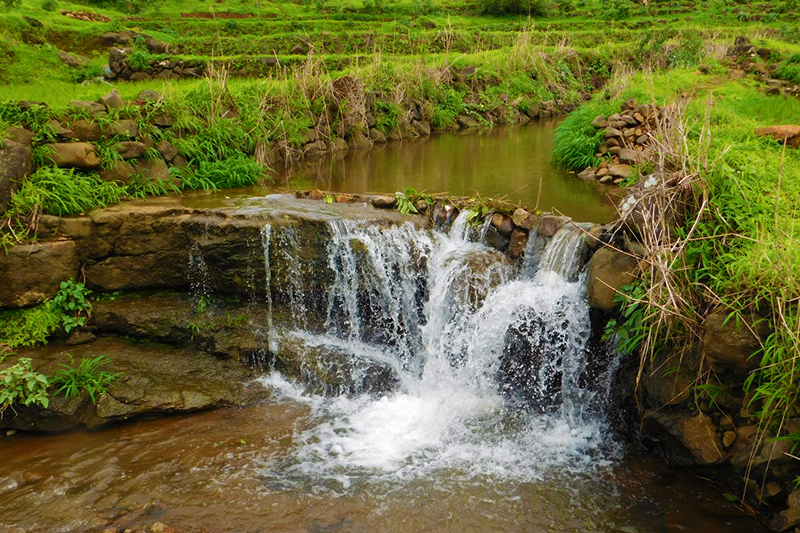
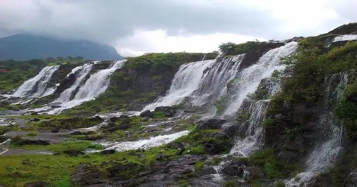
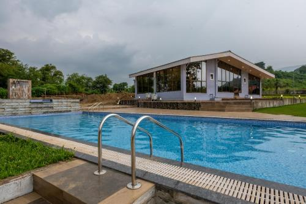
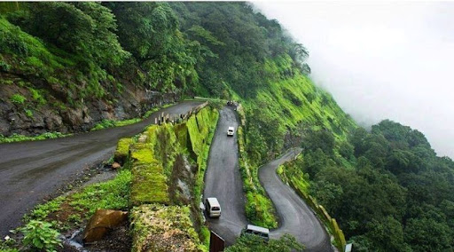

Karjat Hill




🏞️ Introduction
Karjat is a picturesque hill station near Mumbai known for its lush greenery, waterfalls, and scenic trekking trails. It's a popular weekend getaway for nature lovers and adventure seekers.
📜 History
Karjat has historical forts and caves like Kondana Caves, which date back to the Buddhist era. It has been a key point for ancient trade routes and is rich in Maratha heritage.
🕒 Best Time to Visit
- Monsoon (July to September) for lush views and waterfalls
- Winter (November to February) for trekking and camping
📍 Things to Do
- Trek to Kondana Caves
- River rafting during monsoon
- Visit ND Studio
- Explore scenic trails and waterfalls